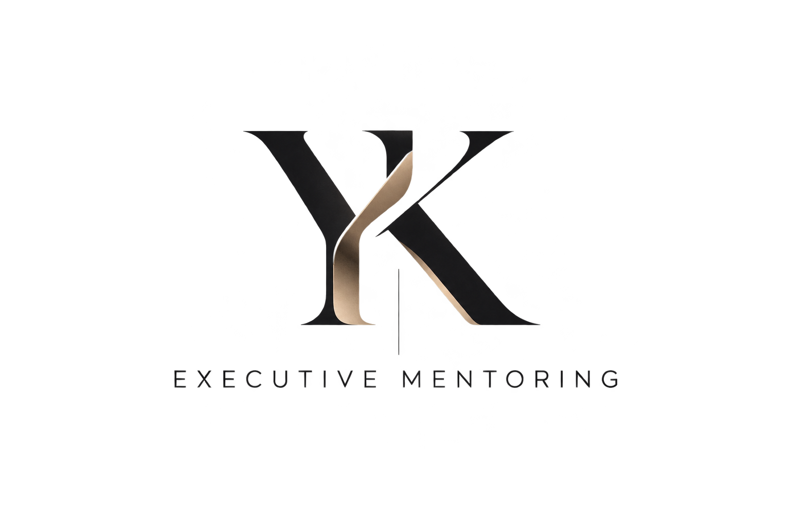

יובל, חשבתי על כל הפעמים שבהן התקשרתי אליך להתייעץ. לא כי לא ידעתי לעשות את העבודה שלי, אלא כי היו מצבים שבהם הייתי צריכה מישהו מנוסה שיעזור לי להבין איך נכון לפעול מהשכל ולא מהבטן.
ואז הבנתי משהו — יש עוד המון מנהלים שמתמודדים עם אותן התלבטויות, אבל לא לכולם יש יובל.
המספרים שמאחורי הבדידות הניהולית, והצורך במנטורינג אמיתי
04
EMOTION & REASON
והמנטור עוזר לעצור ולחשוב גם בשכל
על הבעיה של מישהו אחר, כולנו חכמים יותר
כשמסתכלים על הבעיה שלנו מבחוץ, הפער נעלם. בכל גיל
איך חושבים חשוב פי 6 ממה שיודעים
ב־1,048 החלטות גדולות, תהליך החשיבה השפיע על התוצאות פי 6 יותר מניתוח הנתונים
את ההטיות של עצמנו אי אפשר לתקן לבד
גם כשאנחנו יודעים שהרגש משפיע עלינו, קשה לנו לתקן את זה בעצמנו. מישהו מבחוץ רואה מה שאנחנו לא רואים
כשהנתונים סותרים את הבטן, הבטן מנצחת
67% מהמנכ"לים התעלמו מנתונים כי הם סתרו את הניסיון או האינטואיציה שלהם
הרגש נמצא בכל החלטה
35 שנות מחקר: רגשות הם מניע חזק ונפוץ של החלטות, לפעמים לטובה ולפעמים לרעה
גם בישראל, הבטן היא כלי עבודה
39% מהמנכ"לים בישראל ציינו אינטואיציה ותחושת בטן ככלי חשוב בניהול משבר הקורונה
05
THE PROBLEM
אנשים, מטרות, עדיפויות והחלטות לא פשוטות
מה נכון להגיד, איך להציף, איך להשפיע בלי ליצור חיכוך
איך לבקש העלאה, איך לחתור לתפקיד הבא, ואיך לבנות את המסלול הנכון
פוליטיקה, בעלי עניין, התמודדות עם שינויים ואי־ודאות
תפקידי ניהול מגיעים עם אחריות גדולה, ולעיתים גם עם בדידות בקבלת החלטות
איך להשתפר, ללמוד מטעויות, ולפתח ביטחון והשפעה ניהולית
מנהלים מקבלים החלטות שמשפיעות על הקריירה שלהם, על הצוותים שלהם ועל הארגון – אבל לרוב עושים זאת לבד.
02
הפתרון שלנו
שותף לחשיבה ניהולית. אובייקטיבי, דיסקרטי, שמאתגר הנחות ועוזר למנהלים לראות את התמונה המלאה לפני כל החלטה.
שיחה פתוחה על הדילמות האמיתיות של המנהל
שאלות שמאתגרות את נקודת המבט של המנהל
ניסיון רב, בלי אינטרסים
שיח בטוח וסודי, ברמה הגבוהה ביותר
לא מחליפים את שיקול הדעת של המנהל. משפרים אותו.
06
קהלי היעד
שני קהלים שנכנסים לתפקיד חדש, בלי הכנה ובלי עם מי להתייעץ
קודמו לניהול, בלי שמישהו הכין אותם
מהמנהלים לא קיבלו שום הכשרה פורמלית לניהול
66%
קיבלו הכשרה רק אחרי שכבר נכנסו לתפקיד
39%
מנהלים ומנהלות בישראל, כ־8% מכלל המועסקים
303K
המעבר הגדול לראש הפירמידה
מהמנכ"לים החדשים נכנסים לתפקיד מנכ"ל בפעם הראשונה
75%
בלבד מחברי הדירקטוריון אומרים שהארגון הכין היטב את המנכ"ל החדש
15%
אמרו שהתפקיד שונה מאוד ממה שציפו
72%
08
איך זה עובד?
תהליך מובנה שמתחיל בהיכרות אישית ומוביל להחלטות טובות יותר
05
המנהל מקבל את ההחלטה בעצמו, עם תמונה רחבה, בהירות וביטחון רב יותר
04
אפשרויות, סיכונים והזדמנויות, מנקודות מבט שונות ומאוזנות
03
שאלות שמאתגרות הנחות, זיהוי הטיות אישיות ונקודות מבט חדשות
02
המנהל משתף אתגר, התלבטות או החלטה שעל הפרק, ויובל כבר מכיר את הדרך שבה הוא פועל
01
מה מניע את המנהל, דפוסי החשיבה שלו, סגנון קבלת ההחלטות והנקודות העיוורות
07
למה דווקא אתה?
רואה את התמונה הרחבה, מאזן בין שיקולים ומקבל החלטות נכונות גם במצבים מורכבים
מחבר אנשים למטרה משותפת וגורם להם לרצות להיות חלק מהדרך
מנהל בכיר שיכול להוביל ישיבת הנהלה, ואז לשבת עם הצוות לצחוק ולהיות אחד מהם
יודע לשלב חשיבה רציונלית, אינטואיציה והבנה אנושית
שנים של ניהול בכיר, הובלת עובדים והתמודדות עם אתגרים מורכבים
יודע להקשיב, להבין אנשים, לנהל שיח פתוח וליצור אמון אמיתי
יש דברים שלא לומדים מספרי ניהול.
לומדים אותם מאנשים כמו יובל.
הצעת הערך שלנו
שילוב של ייעוץ אנושי, כלים מבוססי AI ותוכנית עבודה מותאמת אישית
פגישה קבועה עם יובל: ניתוח דילמות, אתגור חשיבה ומעקב אחר ההתקדמות
01
ערוץ ישיר בין הפגישות: התייעצות, נקודת מבט נוספת וליווי בקבלת החלטות
02
תוכנית שמבוססת על המיפוי האישיותי, האתגרים והיעדים של המנהל, עם צעדים ברורים ליישום
03
יעדים להתפתחות ניהולית בתחומי מפתח, ומדידה שוטפת של ההתקדמות
04
הנחיות מעשיות לפי דפוסי החשיבה של המנהל: מה לחזק, ממה להימנע, ואיך להחליט טוב יותר
05
AI-Powered Leadership
טכנולוגיה שמעצימה את הליווי האנושי
09
הפוטנציאל העסקי בישראל
חישוב שמרני, לפי מחירי השוק בישראל
סימולציה: יועץ אחד, 25 לקוחות
11.5
שעות עבודה בשבוע
= 4.33 ÷
50
שעות בחודש
=
2
שעות בחודש ללקוח
×
25
לקוחות
600,000 ₪
הכנסה בשנה
50,000 ₪
הכנסה בחודש
2,000 ₪
לחודש ללקוח
הנחות: פגישה של שעה כל שבועיים, 1,000 ₪ לשעה (בצד הנמוך של טווח המחירים בישראל)
10
כלים טכנולוגיים
כלים חכמים שמשתלבים בתהליך הליווי ומעניקים תובנות, בהירות והתקדמות לאורך זמן
03
AI Meeting Companion
פגישות אפקטיביות יותר
סיכום פגישות, זיהוי תובנות והחלטות, והכנה מותאמת לפגישה הבאה
02
AI Decision Check
חשיבה טובה יותר
ניתוח דילמות והחלטות, עם שאלות מותאמות, חלופות, סיכונים ונקודות לבחינה
01
AI Personality Map
מיפוי אישי מעמיק
זיהוי דפוסי חשיבה, מניעים, חוזקות והטיות שמשפיעים על קבלת ההחלטות של המנהל
רוצה לראות איך זה עובד?
דמו של מרכז ההחלטות על מנהלת חדשה בדויה: מיפוי אישי, ליווי פגישות ובדיקת החלטה
EXECUTIVE MENTORING
ואולי הפרק הבא שלך הוא לא לנהל עוד ארגון.
הוא להשפיע על מי שמנהלים ארגונים!